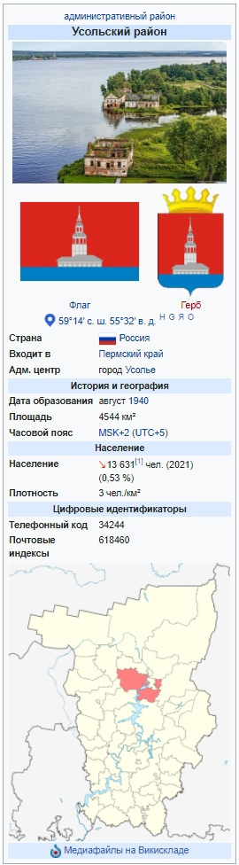
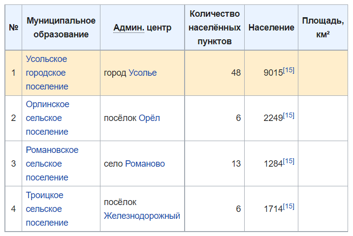

У этого термина существуют и другие значения, см. Усольский район.
Усо́льский райо́н — административный район Пермского края. Территория района входит в состав Березниковского городского округа. До 2018 года был отдельный Усольский муниципальный район. Административный центр — город Усолье. Площадь — 4637,48 км². Население — ↘13 631 чел. (2021). Национальный состав (2010): русские — 94,8 %, татары — 1,4 %, коми-пермяки — 1 %.
| Содержание |
|---|
Граничит на севере с Соликамским
районом,
на востоке — с территорией, подчиненной городу Александровску,
на юге — с Добрянским
и
Юсьвинским
районами, на западе —
с Кудымкарским
и
Косинским
районами Пермского края.
Площадь района — 4637,48 км².
Водные ресурсы района представлены поверхностными и
подземными, а также минерально-питьевыми и лечебно-столовыми водами.
В феврале 1918 года село Новое Усолье стало центром
Соликамского
уезда, а с ноября
1923 года — центром
Верхне-Камского
округа, в который вошли территории
Усольского
и
Чердынского
уездов.
В сентябре 1928 года центр
Верхне-Камского
округа, перенесен в город
Соликамск.
23 июля 1930 года, постановлением ВЦИК,
Верхне-Камский округ упразднён.
20 марта 1932 года Постановлением Президиума
ВЦИК РСФСР город Усолье и рабочие поселки
объединили в один город с присвоением ему наименования — Березники.
30 августа 1940 года
Указом Президиума Верховного Совета РСФСР город Усолье выделен из городской черты города Березники и определен
центром Ворошиловского района
Молотовской
области.
В 1957 году району присвоено наименование
Усольский; с 4.11.1959 — Березниковский р-н.
Указом Президиума Верховного Совета РСФСР от
1
февраля 1963 года
Березниковский район был ликвидирован, а населенные пункты переданы в подчинение г. Березники и г. Соликамска.
С 12.01.1965 вновь был восстановлен Усольский
район
[2]
и существует до настоящего времени.
В 2006—2018 гг. в границах района существовало
муниципальное
образование Усольский
муниципальный
район
,
все поселения которого были в 2018 году упразднены и объединены с
Березниковским
городским округом в новое
муниципальное
образование
город
Березники
со статусом городского округа
[3].
Усольский район как
административно-территориальная
единица края
сохраняет свой статус
[4].
| Численность населения | ||||||||
|---|---|---|---|---|---|---|---|---|
| 2000 [5] | 2002 [6] | 2005 [5] | 2006 [7] | 2007 [5] | 2008 [5] | 2009 [5] | 2010 [8] | 2011 [5] |
| ↗13 819 | ↘13 398 | ↗14 696 | ↘14 400 | ↘14 000 | ↘13 788 | ↘13 720 | ↗14 232 | ↘14 169 |
| 2012 [9] | 2013 [10] | 2014 [11] | 2015 [12] | 2016 [13] | 2017 [14] | 2018 [15] | 2019 [16] | 2020 [17] |
| ↗14 190 | ↘14 048 | ↗14 074 | ↗14 241 | ↗14 275 | ↘14 233 | ↗14 262 | ↘14 205 | ↘13 953 |
| 2021 [1] | ||||||||
| ↘13 631 | ||||||||
Урбанизация
В городских условиях (город
Усолье) проживают 44,93 % населения
района.
Национальный состав
По итогам
переписи 2010 года
[18]:
русские — 94,79 %;
татары — 1,36 %;
коми-пермяки — 0,96 %.
В Усольский муниципальный район в 2006—2018 гг. входило 4 муниципальных образования, в том числе 1 городское и 3
сельских поселения:

Законом Пермского края от 5 марта 2013 года № 176-ПК образовано новое муниципальное образование Усольское городское
поселение в результате объединения граничащих между собой муниципальных образований - Усольского городского
поселения, Пыскорского сельского поселения, сельского поселения Березовка на Каме. Административным центром нового
муниципального образования является город Усолье
[19].
Законом Пермского края от 21 июня 2018 года N 252-ПК, все поселения Усольского муниципального района были упразднены
и объединены с
Березниковским городским округом в новое
муниципальное образование город Березники со статусом
городского округа
[3].
В Усольском районе 73 населённых пункта.
Населённые пункты
В сносках к названию населённого пункта указана их бывшая (до 2018 года) муниципальная принадлежность
| Список населённых пунктов [показать] |
|---|
Посёлок Девятый километр переименован в
Солнечный.
Упразднённые населённые пункты
Посёлок 8 км, деревни Большая Сутяга, Палашер, Петухи, Рассохи.
Развита лесная, деревообрабатывающая промышленность и направление по изготовлению мебели.
Основная специализация
сельскохозяйственного производства — молочно-мясная.
Кравчук, Виктор Петрович (род. 1961) — командующий Балтийским флотом ВМФ РФ, вице-адмирал.